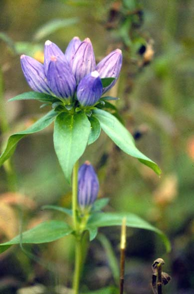
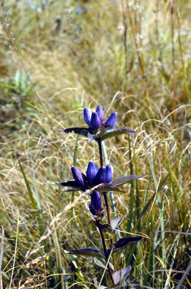
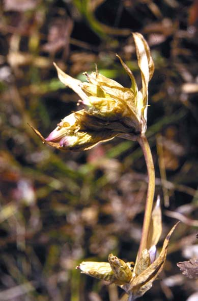

Gentiana Andrewsii
Family: Gentianaceae
Bottle Gentian
Swink/Wilhelm #8


Click to view larger photo
FLOWERING: Late August to late October
SEED TIMING: Late October to early November
HABITAT: Wet to mesic prairie
DIAGNOSTIC FEATURES: 1/2 to 2 feet. Doesn't like tall neighbors. Lance-shaped, stemless, opposite leaves tend to bend downward. Flowers are deep blue and never open forming a bottle shape.
TO PICK: Flower petals turn tan, enclosing a seed pod that elongates and opens to release thousands of tan, wafer-like seeds. If seeds are sticky, wet, or pale green they are not ripe enough to pick. Shake pods into a small plastic bag to collect seeds or pick whole pod.